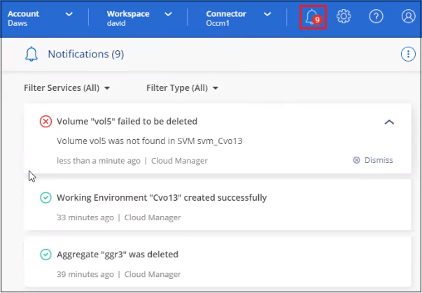
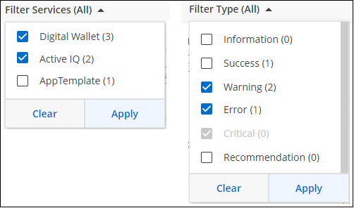
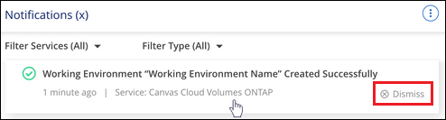
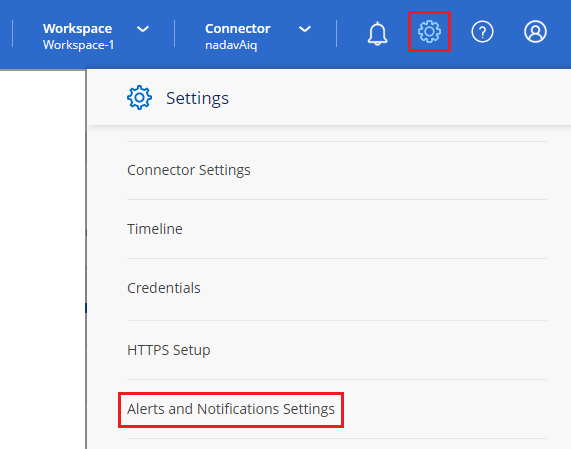

릴리스 정보
릴리스 정보
계정의 작업을 모니터링합니다
 변경 제안
변경 제안
BlueXP가 수행하는 작업의 상태를 모니터링하여 해결해야 할 문제가 있는지 확인할 수 있습니다. 알림 센터, 시각표에서 상태를 보거나 이메일로 알림을 보낼 수 있습니다.
다음 표에서는 Notification Center와 시간 표시 막대를 비교하여 각 기능이 제공해야 하는 사항을 설명합니다.
| 알림 센터 | 타임라인 |
|---|---|
이벤트 및 작업에 대한 상위 상태를 표시합니다 |
추가 조사를 위한 각 이벤트 또는 조치에 대한 세부 정보를 제공합니다 |
현재 로그인 세션의 상태를 표시합니다(로그오프 후 알림 센터에 정보가 표시되지 않음). |
지난 달의 상태를 유지합니다 |
사용자 인터페이스에서 시작된 작업만 표시합니다 |
UI 또는 API의 모든 작업을 표시합니다 |
사용자가 시작한 작업을 표시합니다 |
사용자가 시작했는지 또는 시스템이 시작되었는지에 관계없이 모든 작업을 표시합니다 |
중요도에 따라 결과를 필터링합니다 |
서비스, 작업, 사용자, 상태 등을 기준으로 필터링합니다 |
계정 사용자 및 다른 사용자에게 알림을 이메일로 보낼 수 있는 기능을 제공합니다 |
이메일 기능이 없습니다 |
알림 센터를 사용하여 활동을 모니터링합니다
알림은 BlueXP에서 시작한 작업의 진행 상황을 추적하므로 작업의 성공 여부를 확인할 수 있습니다. 이 기능을 사용하면 현재 로그인 세션 중에 시작한 여러 BlueXP 작업의 상태를 볼 수 있습니다. 현재 모든 BlueXP 서비스가 알림 센터에 정보를 보고하는 것은 아닙니다.
알림 벨( )를 선택합니다. 벨의 작은 거품의 색상은 활성 상태인 최상위 심각도 알림을 나타냅니다. 따라서 빨간색 기포가 나타나면 확인해야 할 중요한 알림이 있다는 의미입니다.
)를 선택합니다. 벨의 작은 거품의 색상은 활성 상태인 최상위 심각도 알림을 나타냅니다. 따라서 빨간색 기포가 나타나면 확인해야 할 중요한 알림이 있다는 의미입니다.

또한 시스템에 로그인하지 않은 경우에도 중요한 시스템 작업을 알 수 있도록 이메일을 통해 특정 유형의 알림을 보내도록 BlueXP를 구성할 수 있습니다. 이메일은 BlueXP 계정에 속한 모든 사용자 또는 특정 유형의 시스템 작업을 알고 있어야 하는 다른 수신자에게 보낼 수 있습니다. 자세한 내용은 를 참조하십시오 이메일 알림 설정을 지정합니다.
알림 유형
알림은 다음 범주로 분류됩니다.
| 알림 유형입니다 | 설명 |
|---|---|
심각 |
수정 조치를 즉시 취하지 않으면 서비스가 중단될 수 있는 문제가 발생했습니다. |
오류 |
조치 또는 프로세스가 실패로 끝나거나 시정 조치가 취해지지 않을 경우 실패로 이어질 수 있습니다. |
경고 |
심각한 심각도에 도달하지 않도록 주의해야 할 문제입니다. 이 심각도에 대한 알림은 서비스 중단을 유발하지 않으며 즉각적인 수정 조치가 필요하지 않을 수 있습니다. |
권장 사항 |
시스템 또는 특정 서비스 개선을 위한 조치를 취할 것을 권장하는 시스템 권장 사항(예: 비용 절감, 새로운 서비스 제안, 권장 보안 구성 등) |
정보 |
작업 또는 프로세스에 대한 추가 정보를 제공하는 메시지입니다. |
성공 |
작업 또는 프로세스가 성공적으로 완료되었습니다. |
알림을 필터링합니다
기본적으로 알림 센터에는 모든 활성 알림이 표시됩니다. 표시되는 알림을 필터링하여 중요한 알림만 표시할 수 있습니다. BlueXP "서비스" 및 "유형" 알림별로 필터링할 수 있습니다.

예를 들어, BlueXP 작업에 대한 "오류" 및 "경고" 알림만 표시하려면 해당 항목을 선택하면 해당 유형의 알림만 표시됩니다.
알림을 닫습니다
더 이상 알림을 볼 필요가 없는 경우 페이지에서 알림을 제거할 수 있습니다. 모든 알림을 한 번에 해제하거나 개별 알림을 해제할 수 있습니다.
모든 알림을 해제하려면 알림 센터에서 을 선택합니다  를 선택하고 * 모두 해제 * 를 선택합니다.
를 선택하고 * 모두 해제 * 를 선택합니다.

개별 알림을 해제하려면 알림 위에 커서를 놓고 * Dismiss * 를 선택합니다. 
이메일 알림 설정을 지정합니다
이메일을 통해 특정 유형의 알림을 전송할 수 있으므로 BlueXP에 로그인하지 않은 경우에도 중요한 시스템 작업을 알 수 있습니다. 이메일은 BlueXP 계정에 속한 모든 사용자 또는 특정 유형의 시스템 작업을 알고 있어야 하는 다른 수신자에게 보낼 수 있습니다.

|
|
알림 센터에서 설정한 필터에 따라 전자 메일로 받을 알림 유형이 결정되지는 않습니다. 기본적으로 BlueXP 계정 관리자는 모든 "중요" 및 "권장 사항" 알림에 대한 이메일을 받게 됩니다. 이러한 알림은 모든 서비스에 걸쳐 제공됩니다. 커넥터 또는 BlueXP 백업 및 복구와 같은 특정 서비스에 대해서만 알림을 받도록 선택할 수는 없습니다.
다른 모든 사용자와 수신자는 알림 이메일을 수신하지 않도록 구성되어 있으므로 추가 사용자에 대한 알림 설정을 구성해야 합니다.
알림 설정을 사용자 지정하려면 계정 관리자여야 합니다.
-
BlueXP 메뉴 표시줄에서 * 설정 > 경고 및 알림 설정 * 을 선택합니다.

-
계정 사용자_탭 또는 _Additional Recipients_tab에서 사용자 또는 여러 사용자를 선택하고 보낼 알림 유형을 선택합니다.
-
단일 사용자를 변경하려면 해당 사용자의 알림 열에서 메뉴를 선택하고 전송할 알림 유형을 선택한 다음 * 적용 * 을 선택합니다.
-
여러 사용자를 변경하려면 각 사용자에 대한 확인란을 선택하고 * 이메일 알림 관리 * 를 선택한 후 전송할 알림 유형을 선택하고 * 적용 * 을 선택합니다.

-
추가 이메일 수신자를 추가합니다
계정 사용자_탭에 나타나는 사용자는 에서 BlueXP 계정의 사용자로부터 자동으로 채워집니다 "계정 관리 페이지")를 클릭합니다. BlueXP에 액세스할 수 없지만 특정 유형의 경고 및 알림에 대해 알림을 받아야 하는 다른 사람 또는 그룹에 대해서는 _Additional Recipients_tab에서 전자 메일 주소를 추가할 수 있습니다.
-
알림 및 알림 설정 페이지에서 * 새 수신자 추가 * 를 선택합니다.

-
이름, 이메일 주소를 입력하고 수신인이 수신할 알림 유형을 선택한 다음 * 새 수신자 추가 * 를 선택합니다.
계정의 사용자 활동을 감사합니다
BlueXP의 시간 표시 막대에는 사용자가 계정 관리를 위해 수행한 작업이 표시됩니다. 여기에는 사용자 연결, 작업 영역 만들기, 커넥터 만들기 등의 관리 작업이 포함됩니다.
특정 작업을 수행한 사람을 확인해야 하거나 작업의 상태를 확인해야 하는 경우 시간 표시 막대를 확인하는 것이 도움이 됩니다.
-
BlueXP 메뉴 모음에서 * 설정 > 타임라인 * 을 선택합니다.
-
필터 아래에서 * Service * 를 선택하고 * Tenancy * 를 활성화하고 * Apply * 를 선택합니다.
계정 관리 작업이 표시되도록 타임라인이 업데이트됩니다.